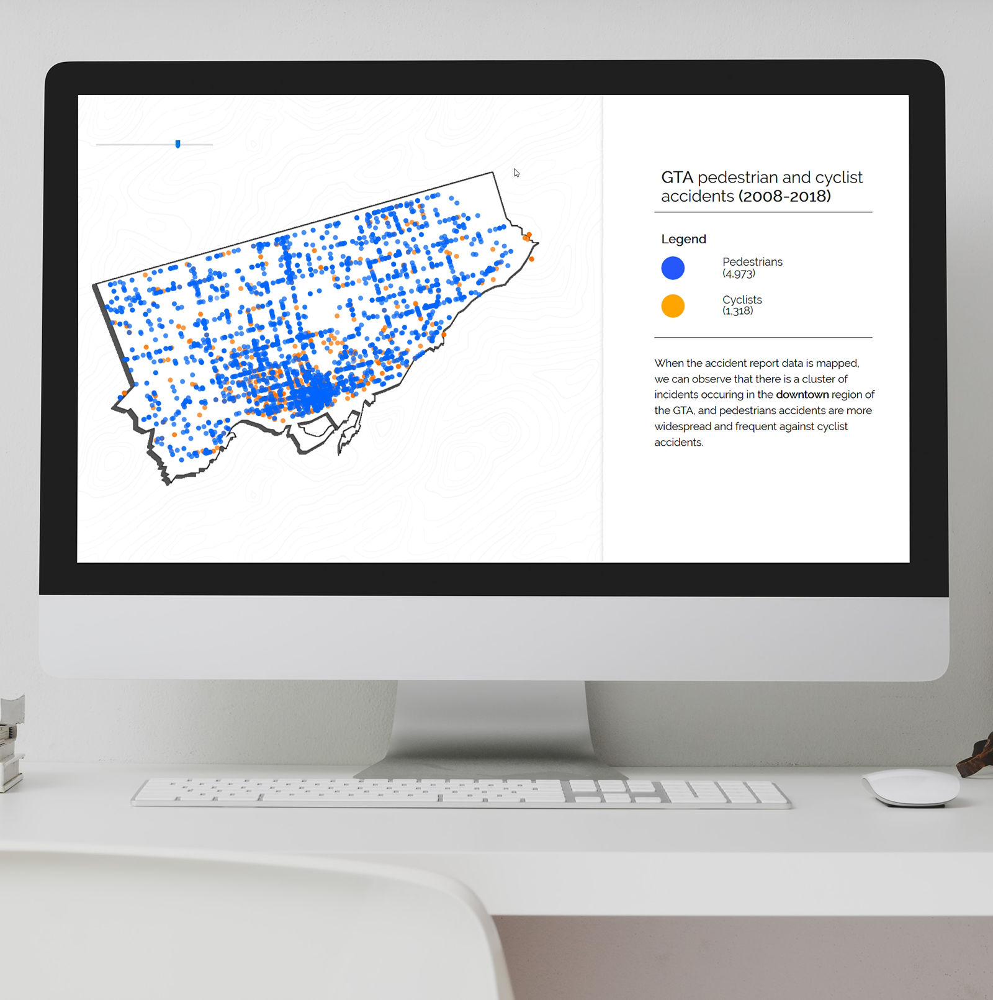

GTA Pedestrian and Cyclist
accident data
For this project, I was provided with a large dataset of police accident reports within the GTA. First, I cleaned up the data using python and pandas. Next, I used Talbeau to quickly find insights within the large dataset. Once I found intriguing points, I began to plan and build the UI for web. The video content was created with Google Earth Studios and Adobe After Effects. The webpage includes a map visualization inputing csv data with P5.js by latitude and longitude.
Technology used
HTML
CSS
Javascript
P5.js
ScrollMagic
Google Earth Studios
Adobe After
Effects
Python - Pandas
Tableau
Charts.js
Like what you see?


© 2020 Cadence Watson. All Rights Reserved.